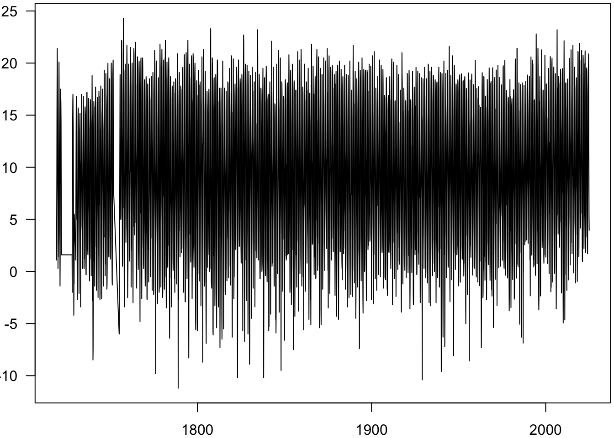
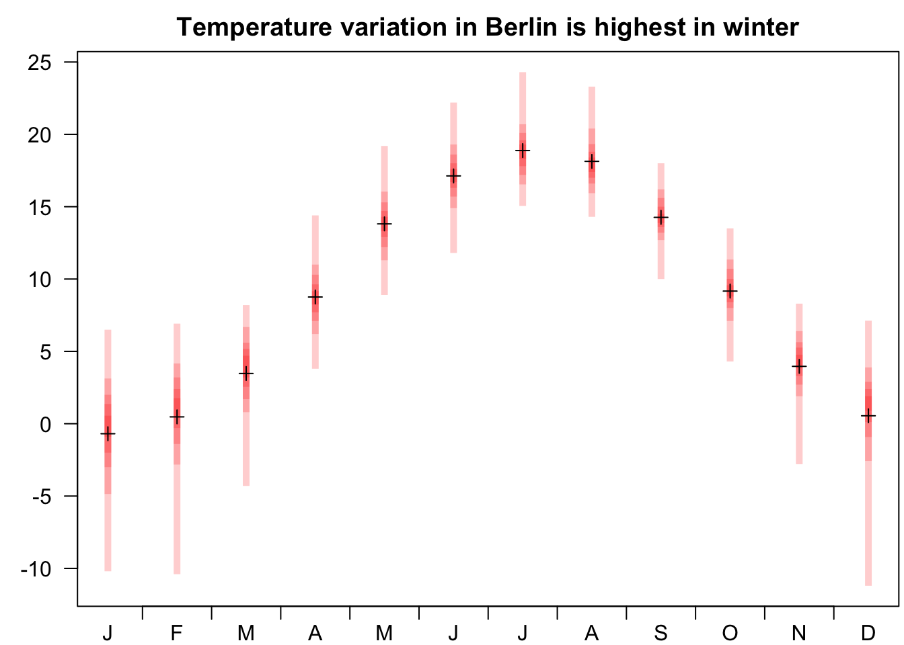

18 - use case: longest time series in Berlin
18.1 select station
Choose station in Berlin with longest monthly average recordings (according to metadata, which is not always correct).
## Berlin-Adlershof Berlin-Alexanderplatz Berlin-Biesdorf
## 395 399 17471
## Berlin-Blankenfelde Berlin-Borsigwalde Berlin-Britz
## 17491 17484 17462data("metaIndex")
berlin <- metaIndex[with(metaIndex,
Stations_id %in% ids & res=="monthly" & var=="kl" & per=="historical"),]
berlin$ndays <- as.numeric(berlin$bis_datum - berlin$von_datum)
berlin <- berryFunctions::sortDF(berlin, ndays)
berlin$von_datum <- as.character(berlin$von_datum) # avoid huxtable error
berlin$bis_datum <- as.character(berlin$bis_datum)
berlin # Dahlem (FU) has data since 1719 !| Stations_id | von_datum | bis_datum | Stationshoehe | geoBreite | geoLaenge | Stationsname | Bundesland | Abgabe | res | var | per | hasfile | ndays |
|---|---|---|---|---|---|---|---|---|---|---|---|---|---|
| 403 | 1719-01-01 | 2025-07-31 | 51 | 52.5 | 13.3 | Berlin-Dahlem (FU) | Berlin | Frei | monthly | kl | historical | TRUE | 1.12e+05 |
| 400 | 1889-01-01 | 2025-07-31 | 60 | 52.6 | 13.5 | Berlin-Buch | Berlin | Frei | monthly | kl | historical | TRUE | 4.99e+04 |
| 402 | 1830-01-01 | 1962-12-31 | 55 | 52.5 | 13.3 | Berlin-Dahlem (LFAG) | Berlin | Frei | monthly | kl | historical | TRUE | 4.86e+04 |
| 429 | 1890-07-01 | 1987-01-31 | 32 | 52.6 | 13.2 | Berlin-Spandau | Berlin | Frei | monthly | kl | historical | TRUE | 3.53e+04 |
| 430 | 1927-01-01 | 2021-04-30 | 36 | 52.6 | 13.3 | Berlin-Tegel | Berlin | Frei | monthly | kl | historical | TRUE | 3.45e+04 |
| 433 | 1938-01-01 | 2025-07-31 | 48 | 52.5 | 13.4 | Berlin-Tempelhof | Berlin | Frei | monthly | kl | historical | TRUE | 3.2e+04 |
| 424 | 1901-01-01 | 1980-12-31 | 36 | 52.5 | 13.5 | Berlin-Ostkreuz | Berlin | Frei | monthly | kl | historical | TRUE | 2.92e+04 |
| 3147 | 1951-03-01 | 2025-07-31 | 390 | 48.8 | 12.2 | Mallersdorf-Pfaffenberg-Oberlindhart | Bayern | Frei | monthly | kl | historical | TRUE | 2.72e+04 |
| 422 | 1892-01-01 | 1964-12-31 | 35 | 52.5 | 13.4 | Berlin-Mitte | Berlin | Frei | monthly | kl | historical | TRUE | 2.67e+04 |
| 408 | 1883-01-01 | 1951-11-30 | 35 | 52.5 | 13.4 | Berlin-Invalidenstrasse | Berlin | Frei | monthly | kl | historical | TRUE | 2.52e+04 |
| 427 | 1957-01-01 | 2025-07-31 | 46 | 52.4 | 13.5 | Berlin Brandenburg | Brandenburg | Frei | monthly | kl | historical | TRUE | 2.5e+04 |
| 5138 | 1945-01-01 | 2003-12-31 | 446 | 47.8 | 9.16 | Ueberlingen/Bodensee | Baden-Wuerttemberg | Frei | monthly | kl | historical | TRUE | 2.15e+04 |
| 434 | 1913-07-01 | 1960-12-31 | 35 | 52.5 | 13.5 | Berlin-Treptow | Berlin | Frei | monthly | kl | historical | TRUE | 1.74e+04 |
| 435 | 1964-01-01 | 2006-12-31 | 45 | 52.4 | 13.2 | Berlin-Zehlendorf | Berlin | Frei | monthly | kl | historical | TRUE | 1.57e+04 |
| 399 | 1975-01-01 | 2015-05-31 | 36 | 52.5 | 13.4 | Berlin-Alexanderplatz | Berlin | Frei | monthly | kl | historical | TRUE | 1.48e+04 |
| 425 | 1946-01-01 | 1982-06-30 | 38 | 52.4 | 13.5 | Berlin-Rudow | Berlin | Frei | monthly | kl | historical | TRUE | 1.33e+04 |
| 420 | 1993-05-01 | 2025-07-31 | 61 | 52.5 | 13.6 | Berlin-Marzahn | Berlin | Frei | monthly | kl | historical | TRUE | 1.18e+04 |
| 417 | 1930-09-01 | 1956-10-31 | 43 | 52.4 | 13.3 | Berlin-Lichterfelde (Sued) | Berlin | Frei | monthly | kl | historical | TRUE | 9.56e+03 |
| 410 | 1996-06-01 | 2020-05-31 | 33 | 52.4 | 13.7 | Berlin-Kaniswall | Berlin | Frei | monthly | kl | historical | TRUE | 8.76e+03 |
| 407 | 1958-01-01 | 1978-03-31 | 48 | 52.6 | 13.3 | Berlin-Frohnau | Berlin | Frei | monthly | kl | historical | TRUE | 7.39e+03 |
| 432 | 1978-04-01 | 1994-12-31 | 36 | 52.6 | 13.3 | Berlin-Tegeler Fliesstal | Berlin | Frei | monthly | kl | historical | TRUE | 6.12e+03 |
| 416 | 1982-07-01 | 1996-09-30 | 47 | 52.4 | 13.4 | Berlin-Lichtenrade | Berlin | Frei | monthly | kl | historical | TRUE | 5.20e+03 |
| 395 | 1948-07-01 | 1953-12-31 | 38 | 52.4 | 13.5 | Berlin-Adlershof | Berlin | Frei | monthly | kl | historical | TRUE | 2.01e+03 |
| 405 | 1951-04-01 | 1954-12-31 | 37 | 52.5 | 13.7 | Berlin-Friedrichshagen | Berlin | Frei | monthly | kl | historical | TRUE | 1.37e+03 |
18.2 download and inspect data
url <- selectDWD("Berlin-Dahlem (FU)", res="monthly", var="kl", per="h")
kl <- dataDWD(url, varnames=TRUE)
plot(kl$MESS_DATUM, kl$MO_TT.Lufttemperatur, type="l", las=1) # pretty complete
18.3 aggregates by month
monthly <- tapply(kl$MO_TT.Lufttemperatur, format(kl$MESS_DATUM,"%m"), quantile, probs=0:10/10)
monthly <- sapply(monthly, I)
plot(1, type="n", xlim=c(1,12), ylim=range(monthly), xaxt="n", las=1,
xlab="Vis by Berry B, github.com/brry/rdwd", ylab="monthly temperature average",
main="Temperature variation in Berlin is highest in winter")
axis(1, 2:12-0.5, labels=FALSE)
axis(1, 1:12, substr(month.abb,1,1), tick=FALSE, line=-0.5)
for(m in 1:12) for(q in 1:5) lines(c(m,m), monthly[c(q,12-q),m], lend=1,
col=berryFunctions::addAlpha("red",0.2), lwd=5)
for(m in 1:12) points(m, mean(monthly[,m]), pch=3)